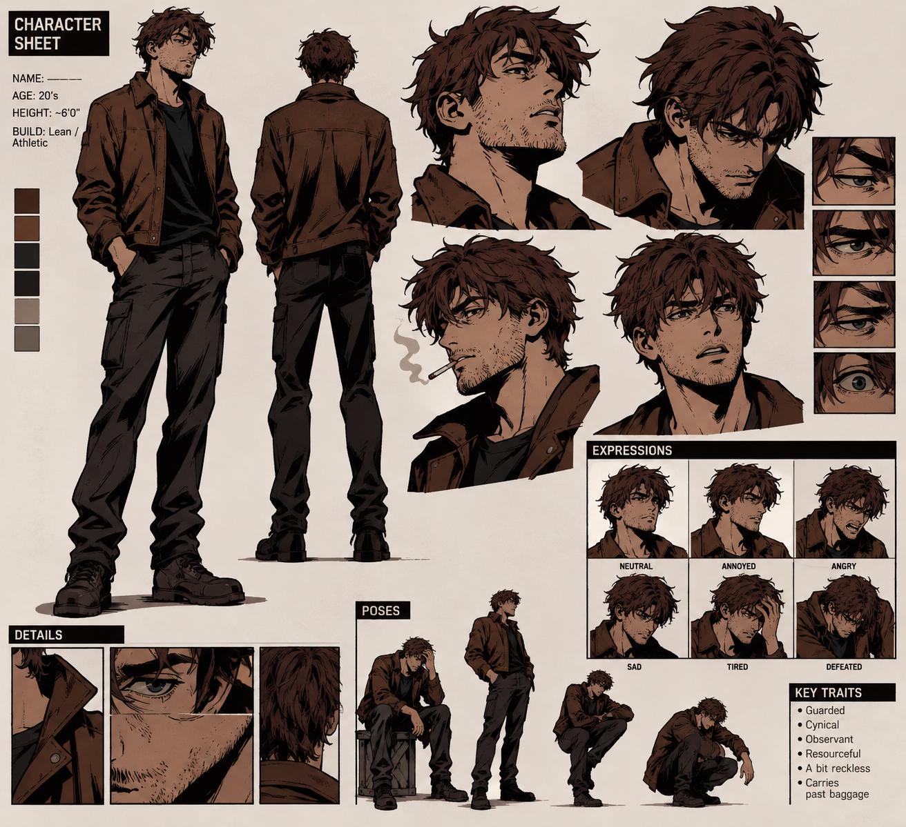

The question
How much direction does it take to keep an AI-illustrated comic character on-model across panels — and at what point does each control method become necessary?
Why it matters
For creators short on time or budget, AI can stand in for hand-illustration. The catch is drift: a character who changes faces between panels breaks the comic, and in silent sight gags the expression is the joke. Knowing which control step a scene needs saves wasted generations and keeps the creator in charge of the vision.
Audience
Creators who can design a character but can’t hand-illustrate every panel — indie comic makers and design students.
Possible outcomes
- Consistency playbook — the control ladder, prompt templates and reference sheets, with notes on when each is needed.
- Short comic — a mostly-silent, music-driven strip; genre leaning modern / sci-fi / western, not medieval.
- Tool showdown — the same character and panels across models, scored on one rubric, failures kept as a blooper reel.
The control ladder
Each rung is a claim to test: does this step hold the character, or does it only hide the drift? Rung order below Week 5 is still pending instructor feedback.
-
Text prompts
Tested differentlyWhere every attempt starts: cheap, fast, and where drift shows first. The Week 5 run tested a repeat-prompt workflow rather than the four-panel Drift Test itself.
-
Reference images
Next upA turnaround sheet gives the model more to hold onto. Rerun the same four panels with the sheet attached, then compare against prompts alone.
-
Panel templates
Planned · Week 7Fix composition and framing so layout stops drifting between panels, and measure what consistency the template buys on its own.
-
AI-friendly character design
Planned · Week 8Adjust the design to avoid whatever drifted most, rerun, and record what AI keeps reliably versus what it loses.
Sources and notes
Benchmarks and method
-
Benchmark
Which AI image generator has the best character consistency?
FLUX.2 and Gemini 3.1 Flash were strongest; gpt-image-2 third; Runway Gen-4 last. Grounds the tool-choice decision.
-
Method
How to create consistent AI characters
Reference-driven workflow. The process behind the Week 5 verification run.
Craft
-
Article
Keep AI-generated characters consistent
Reusable reference, stable identity prompts, version-aware tools, sensible use of seeds.
-
Article
Keeping AI comic characters consistent across panels
Practical techniques for face, clothing and proportions across scenes.
-
Article
Consistent characters with character reference
Reference feature walkthrough; useful for what a tool accepts as input.
-
Docs
Generate images with Gemini
Official capabilities and limits for Gemini image generation.
Mechanism — why drift happens
-
Paper
Context Representation Drift (CRD) v1.3
Context representation drift as a mechanism, not just an observed symptom.
-
Paper
Bounded working memory
Why long, multi-turn editing sessions degrade instead of improving.
Framing inspiration
-
Video
Bad Ink Studios — long scenes, fewer pages
Condensing a long sequence into an omnibus-worth of story without losing the beat.
Working notebooks and raw notes
Reference images
Two sheets of the same character. The first sets the tone; the second is the working reference for the comic and the Week 6 test, because it gives the model more angles to hold.


The rest of the mood board — cartoon mouse, Gundam, kaiju, a limited-palette noir page, a black-and-white gag strip — still lives in Milanote as remote cards. Roles and source names are tracked in references.md.
Notes and experiment log
-
Runway method verification
Ran the article’s workflow: one character brief repeated five times (tall man, dark red Mohawk, nose tattoo, V guitar on his back, full body), then a pose transfer onto a guitar-playing figure. Screenshots kept with the W5 note.
What changed: confirmed that prompts alone wobble and references are the next rung. Next move: pick genre and cast.
-
Generator benchmark, and a useful failure
FLUX.2 and Gemini 3.1 Flash led on consistency; gpt-image-2 came third; Runway Gen-4 last. Separately, NotebookLM’s recreation of the article’s tattooed subject came back as a woman because the source never specified gender — the tool filling gaps is the whole drift problem in miniature.
Next: start comic-craft research — framing, gutters, theming.
-
Drift has a mechanism
Context Representation Drift and bounded working memory explain why long editing sessions degrade; the notes also collect “editing degradation” and the multi-turn degradation trap. Drift is a budget problem, not bad luck.
-
Mood board, comic direction, reference inventory
Mood board assembled and annotated: aim for a more detailed style, since a complex image gives the generation more to hold onto. Comic planning opened: cast male or deliberately unreadable; genre modern / sci-fi / western, avoiding medieval; story seeds from Dead as Disco, the Cyberpunk 2077 opener and Jukebox Hero; the Garfield-format 4–8 panel strip flagged as the likely case-study format. Turnaround sheet downloaded and both sheets catalogued.
Next: run the four-panel Drift Test (neutral, surprised, annoyed, tired) with the turnaround attached.
Prompt log
| Prompt | Tool | Output | What changed |
|---|---|---|---|
| Make a tall male with dark red hair in a Mohawk. He has a nose tattoo and a V guitar on his back. (Full body shot) ×5 | Not recorded | Five full-body variations, then a pose transfer onto a guitar-playing figure. | Added reference images to the plan as the next rung. |
No scored Drift Test rows yet — the four-panel run has not happened. The log stays empty rather than filling in guessed results.
Roadmap, Weeks 5–11
-
Week 5 Next up
The Drift Test
One prompt, four panels — neutral, surprised, annoyed, tired — scored on art style, face and expressions, props and outfit. Output: scored entry plus screenshots.
-
Week 6 Planned
Reference images rung
Rerun the four panels — neutral, surprised, annoyed, tired — with the turnaround attached, respecting each tool’s reference limit. Output: reference sheet + side-by-side comparison.
-
Week 7 Planned
Panel templates rung
Test whether layout templates hold composition and framing. Output: template set + scored test.
-
Week 8 Planned
Character design rung
Revise the design around what drifted most, then rerun. Output: revised character + what AI keeps versus loses.
-
Week 9 Planned
Sample pages
Make a few pages using only the rungs that earned their place. Success: the character is recognisable on every page.
-
Week 10 Planned
Playbook assembly
Compile the ladder, prompt templates, reference sheets and “when you need each” notes, plus the blooper reel.
-
Week 11 Planned
Polish and present
Revise on critique, finalise playbook and sample pages.
Open questions and workspace
Open questions
- Do the tools’ reference limits force trimming the turnaround?
- One tool or two for the showdown? — pending instructor feedback.
- What counts as acceptable drift? — pending instructor feedback.
- Dialogue: generate text boxes or composite them? Balloons or narration boxes?
Workspace
- Project board export — inquiry brief, roadmap, deliverables
- Mood board — style references
- Comic planning — genre, cast, story seeds
- Reference inventory — image roles and sources
- Tutorial steps and tool addendums
- GitHub repository — replace with your repo URL